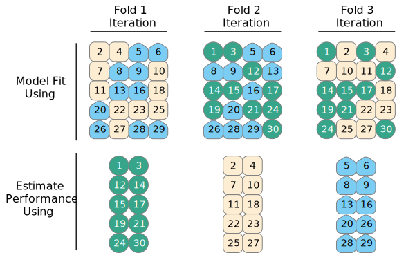
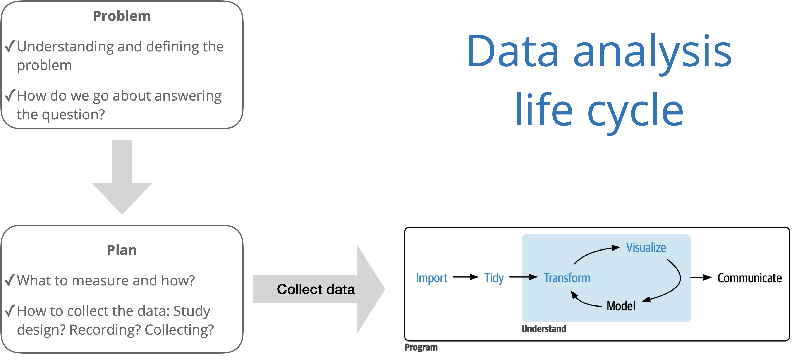

# load packages
library(tidyverse)
library(tidymodels)
library(patchwork)
library(knitr)
library(kableExtra)
# set default theme and larger font size for ggplot2
ggplot2::theme_set(ggplot2::theme_bw(base_size = 20))Cross validation
Announcements
Exam 02 - April 17 (same format as Exam 01)
- Lecture videos available
Next project milestone: Draft and peer review in April 21 lab
Statistics experience due April 15
Topics
- Cross validation
Computational setup
Data: Sesame Street
Today’s data comes from an experiment by the Educational Testing Service to test the effectiveness of the children’s program Sesame Street. Sesame Street is an educational program designed to teach young children basic educational skills such as counting and the alphabet
As part of the experiment, children were assigned to one of two groups: those who were encouraged to watch the program and those who were not.
The show is only effective if children watch it, so we want to understand what effect the encouragement had on the frequency children watched the program.
Variables
Response:
viewcat- 1: rarely watched show
- 2: watched once or twice a week
- 3: watched three to five times a week
- 4: watched show on average more than five times a week
Predictors:
age: child’s age in monthsviewenc: 1: encouraged to watch, 0: not encouraged
Application exercise
Cross validation
Spending our data
- We have already established that the idea of data spending where the test set was recommended for obtaining an unbiased estimate of performance.
- However, we usually need to understand the effectiveness of the model before using the test set.
- Typically we can’t decide on which final model to take to the test set without making model assessments.
- Remedy: Resampling to make model assessments on training data in a way that can generalize to new data.
Resampling for model assessment
Resampling is only conducted on the training set. The test set is not involved. For each iteration of resampling, the data are partitioned into two subsamples:
- The model is fit with the analysis set. Model fit statistics such as \(R^2_{Adj}\), AIC, BIC, and AUC are calculated based on this fit.
- The model is evaluated with the assessment set.
Resampling for model assessment

Image source: Kuhn and Silge. Tidy modeling with R.
Analysis and assessment sets
- Analysis set is analogous to training set.
- Assessment set is analogous to test set.
- The terms analysis and assessment avoids confusion with initial split of the data.
- These data sets are mutually exclusive.
Cross validation
More specifically, v-fold cross validation – commonly used resampling technique:
- Randomly split your training data into v partitions
- Use v-1 partitions for analysis, and the remaining 1 partition for analysis (model fit + model fit statistics)
- Repeat v times, updating which partition is used for assessment each time
. . .
Let’s give an example where v = 3…
To get started…
Split data into training and test sets
set.seed(345)
sesame_split <- initial_split(sesame)
sesame_train <- training(sesame_split)
sesame_test <- testing(sesame_split)To get started…
Specify model
sesame_spec <- multinom_reg(). . .
sesame_specMultinomial Regression Model Specification (classification)
Computational engine: nnet . . .
Note: Use linear_reg() or logistic_reg() for linear or logistic models, respectively.
To get started…
Create workflow
sesame_wflow1 <- workflow() |>
add_model(sesame_spec) |>
add_formula(viewcat ~ ageCent + viewenc + site). . .
sesame_wflow1══ Workflow ════════════════════════════════════════════════════════════════════
Preprocessor: Formula
Model: multinom_reg()
── Preprocessor ────────────────────────────────────────────────────────────────
viewcat ~ ageCent + viewenc + site
── Model ───────────────────────────────────────────────────────────────────────
Multinomial Regression Model Specification (classification)
Computational engine: nnet Cross validation, step 1
Randomly split your training data into 3 partitions:

Tips: Split training data
folds <- vfold_cv(sesame_train, v = 3)
folds# 3-fold cross-validation
# A tibble: 3 × 2
splits id
<list> <chr>
1 <split [120/60]> Fold1
2 <split [120/60]> Fold2
3 <split [120/60]> Fold3Cross validation, steps 2 and 3
- Use v-1 partitions for analysis, and the remaining 1 partition for assessment
- Repeat v times, updating which partition is used for assessment each time

Sesame Street: Fit resamples
sesame_fit_rs1 <- sesame_wflow1 |>
fit_resamples(resamples = folds,
metrics = metric_set(accuracy, roc_auc))
sesame_fit_rs1# Resampling results
# 3-fold cross-validation
# A tibble: 3 × 4
splits id .metrics .notes
<list> <chr> <list> <list>
1 <split [120/60]> Fold1 <tibble [2 × 4]> <tibble [0 × 3]>
2 <split [120/60]> Fold2 <tibble [2 × 4]> <tibble [0 × 3]>
3 <split [120/60]> Fold3 <tibble [2 × 4]> <tibble [0 × 3]>Cross validation, now what?
- We’ve fit a bunch of models
- Now it’s time to use them to collect metrics (e.g., AUC, ) on each model and use them to evaluate model fit and how it varies across folds
Collect metrics from CV
# Produces summary across all CV
collect_metrics(sesame_fit_rs1)# A tibble: 2 × 6
.metric .estimator mean n std_err .config
<chr> <chr> <dbl> <int> <dbl> <chr>
1 accuracy multiclass 0.344 3 0.0641 Preprocessor1_Model1
2 roc_auc hand_till 0.624 3 0.0341 Preprocessor1_Model1Note: These are calculated using the assessment data
Deeper look into results
cv_metrics1 <- collect_metrics(sesame_fit_rs1, summarize = FALSE)
cv_metrics1# A tibble: 6 × 5
id .metric .estimator .estimate .config
<chr> <chr> <chr> <dbl> <chr>
1 Fold1 accuracy multiclass 0.4 Preprocessor1_Model1
2 Fold1 roc_auc hand_till 0.644 Preprocessor1_Model1
3 Fold2 accuracy multiclass 0.217 Preprocessor1_Model1
4 Fold2 roc_auc hand_till 0.557 Preprocessor1_Model1
5 Fold3 accuracy multiclass 0.417 Preprocessor1_Model1
6 Fold3 roc_auc hand_till 0.670 Preprocessor1_Model1Better presentation of results
cv_metrics1 |>
mutate(.estimate = round(.estimate, 3)) |>
pivot_wider(id_cols = id, names_from = .metric, values_from = .estimate) |>
kable(col.names = c("Fold", "Accuracy", "AUC"))| Fold | Accuracy | AUC |
|---|---|---|
| Fold1 | 0.400 | 0.644 |
| Fold2 | 0.217 | 0.557 |
| Fold3 | 0.417 | 0.670 |
Cross validation in practice
To illustrate how CV works, we used
v = 3:- Analysis sets are 2/3 of the training set
- Each assessment set is a distinct 1/3
- The final resampling estimate of performance averages each of the 3 replicates
This was useful for illustrative purposes, but
vis often 5 or 10; we generally prefer 10-fold cross-validation as a default
Example modeling workflow
Exploratory data analysis
Using training data…
Fit and evaluate candidate model using cross validation
Select the best fit model
Check model conditions and diagnostics
Repeat as needed until you’ve landed on final model
Evaluate the final model performance using the test set
Data analysis workflow
